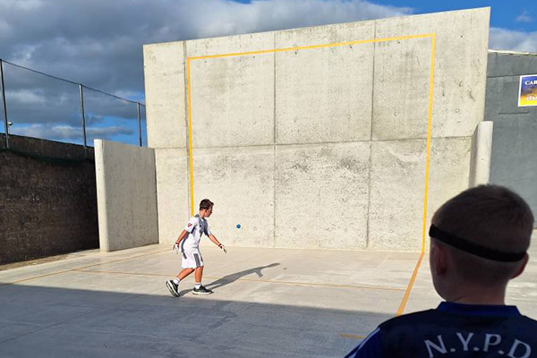

Club Facilities
The Carrick-on-Suir Handball & Racquetball Club offers a vibrant, community-focused environment with a fully equipped indoor 40x20 court, two outdoor 1-ball 60x30 court, two changing rooms with showers, male and female restrooms, a viewing area, a tea/coffee station, and a referee stand for official matches. A newly added gym is available for all paid members.
Membership Fees: €50 per adult, €20 per juvenile, €60 per family per year. Court and gym usage is on a pay-for-lights basis: €1 per 15 minutes for the court and €1 per 25 minutes for the gym.
Court Bookings:Bookings can be made via the TeamUp app which will be set upon joining the club.